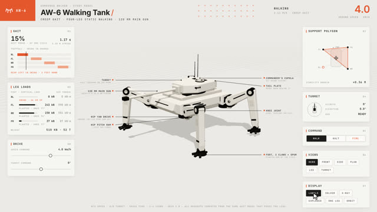
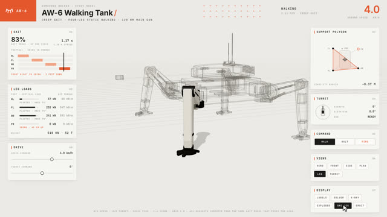
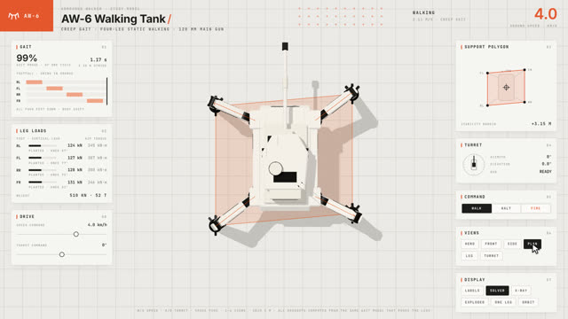
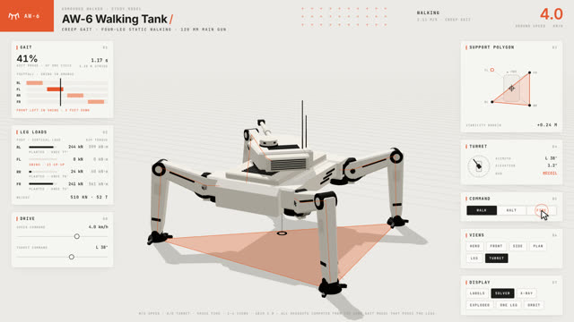
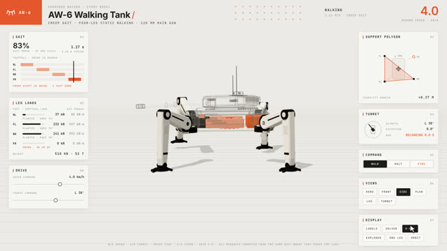
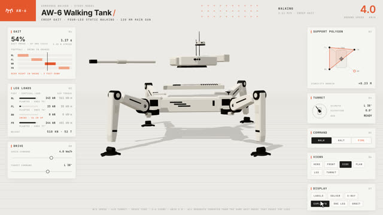

작업 흐름
- 입력
- 보여 줄 기계와 부품 목록, 또는 따라 만들 화면 녹화 영상
- 모델
- 기계를 움직이는 작은 모델 하나 (보행 위상과 다리 IK, 크랭크-슬라이더와 캠). 같은 상태에서 자세와 계기판 숫자를 모두 계산
- 형상
- 모따기 상자, 돌출 단면, 원통, 관으로 지은 부품. 관절마다 그룹, 부품마다 라벨 · 분해 방향 · 역할 (외피 · 골격 · 내부)
- 화면
- 밝은 설계도 바닥과 1 m 격자, 흰 패널 계기판, 뷰 버튼, 표시 모드 (라벨 · 솔버 · X-ray · 분해 · 부품 분리 · 오빗)
- 출력
- 마우스 · 키보드로 조작하는 라이브 페이지, 커서 투어를 프레임 단위로 구운 1920×1080 MP4
cd machine-sim
python3 -m http.server 8000 # http://localhost:8000/examples/walker/
node scripts/render.mjs examples/walker/index.html /tmp/st --stills 3,7.5,11.5,19.5
bash scripts/render-chunked.sh examples/walker/index.html out/walker.mp4 7 3 20요구 사항: Node + Playwright Chromium (헤드리스 WebGL), ffmpeg. three.js와 폰트를 함께 담고 있어 네트워크 없이 돕니다. 단계별 순서는 SKILL.md에 있습니다.
샘플
두 예제의 투어에서 뽑은 장면입니다. 다리 하나가 공중에 있으면 그 발의 하중은 0 kN이고, 엔진의 p–V 점은 피스톤이 있는 자리를 따라갑니다. 카드를 누르면 새 탭에서 그 순간부터 라이브 페이지가 재생되고, 아무 곳이나 누르면 직접 조작으로 넘어갑니다.
AW-6 보행 전차 크리프 보행 · 27초 투어
네 다리 중 하나만 들고 걷는 정적 보행. 위상에서 발 위치, 다리 IK, 지지 다각형, 안정 여유, 발마다 걸리는 하중을 모두 계산합니다.

라벨지시선 라벨
모델 화면 영역 바깥 두 열에 정렬, 겹치면 아래로 밀기

부품 분리다리 하나
나머지 부품은 투명한 몸체와 모서리선으로, 카메라는 다리 뷰로

솔버 · 평면지지 다각형
땅에 닿은 발로 만든 다각형, 착지 목표 고리, 다리 사슬 선

명령선회와 발사
슬라이더 드래그로 포탑 38° 선회, 발사하면 주포가 0.55 m 후퇴

X-ray외피 속 내부
외피는 비치고, 평소 숨은 내부 부품이 서서히 나타남

분해도마디마다 벌리기
부모 좌표계 기준 분해 방향이라 정강이는 다리 축을 따라 빠짐
ST-1 단기통 엔진 4행정 · 1/60 속도 · 26초 투어
같은 키트로 만든 다른 기계. 크랭크 각 하나로 피스톤, 커넥팅 로드, 반속 캠, 밸브, 점화, 압력 모델과 토크를 계산합니다.
실제 작품
이 스킬은 이 레포에서 X에 올라온 화면 녹화(studio_oneroom, three.js로만 만든 4족 보행 전차 페이지, 26초)를 코드로 다시 만들며 다듬어졌습니다. 원본 페이지의 코드는 공개되어 있지 않아, 영상에 보이는 패널 · 모드 · 동작을 보고 처음부터 지었습니다.
링크
- SKILL.md 워크플로 · 규칙 · 계약
- 폴더 kit · scripts · references · examples
- README.md 빠른 시작
- references/KIT.md 키트 API · 부품 역할 · 투어
- references/MODELS.md 보행 · 엔진 · 기어 · 링크 모델
- references/LESSONS.md 겪은 문제와 해결